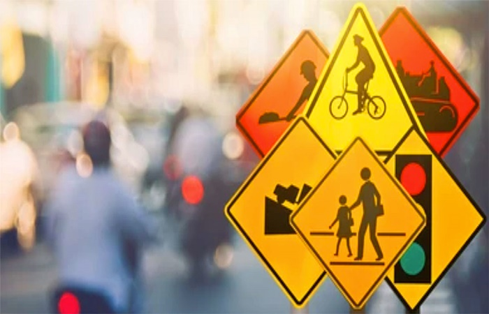
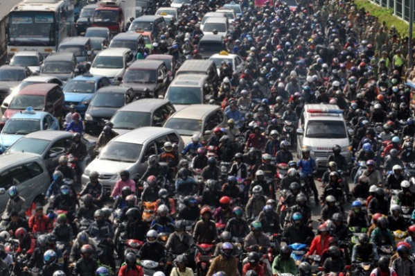
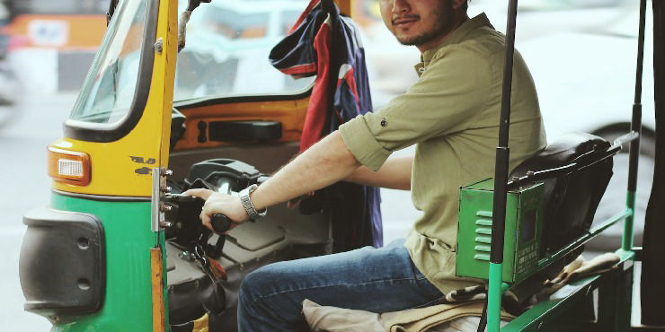

Que es un mototaxi
Los mototaxis también conocidos como motocarros o golfitaxis son motocicletas adaptadas
con carrocería para transportar pasajeros en trayectos cortos. Son muy comunes en zonas
como Iztapalapa, Tláhuac, Xochimilco, Cuauhtémoc y Gustavo A. Madero.
En algunas zonas de CDMX, las tarifas por persona oscilan entre 6.50 y 13.50 pesos, y puede
haber una tarifa fija de 11.50 pesos después de ciertas horas
Disponibilidad y regulación
Se estima que actualmente hay más de 20,000 mototaxis y bicitaxis circulando en CDMX, muchos
de ellos operando de forma informal, sin supervisión ni regulación oficial.
La SEMOVI es la autoridad encargada de regular estos servicios, pero hasta hoy no hay un marco
regulatorio uniforme que los regularice eficientemente.
Condiciones laborales
El servicio suele operar en condiciones laborales precarias: jornadas largas (más de 11 horas),
baja remuneración (aproximadamente 59 USD por semana), pocas protecciones sociales y altos índices
de problemas musculoesqueléticos y enfermedades entre lxs conductorxs.
Seguridad vial y riesgos

Uno de los temas más polémicos en torno a los mototaxis es la seguridad vial. Debido a que circulan en calles congestionadas y, en muchos casos, sin cumplir con normativas de tránsito, el riesgo de accidentes es alto. Los pasajeros suelen viajar sin cinturón de seguridad, en unidades adaptadas de manera artesanal que no cumplen con estándares mínimos de seguridad. El mototaxi, por su tamaño y estructura, ofrece una protección limitada ante choques o volcaduras.
Los riesgos no se limitan a los pasajeros, sino también a los peatones y ciclistas que comparten la vía. La falta de infraestructura adecuada para este tipo de transporte genera conflictos en el espacio urbano, ya que los mototaxis terminan circulando en calles estrechas, banquetas o incluso vialidades principales. Esto crea una dinámica de vulnerabilidad compartida que impacta en la movilidad segura de toda la comunidad.
Por otra parte, la falta de regulación también hace que la seguridad dependa casi por completo de las decisiones individuales de los conductores. El uso de cascos es irregular, las revisiones mecánicas casi inexistentes y los controles de velocidad escasos. La seguridad vial, en este caso, se convierte en un problema colectivo que refleja tanto la precariedad de las condiciones del servicio como la omisión de las autoridades para establecer reglas claras.
Impacto ambiental

El uso de mototaxis también tiene un fuerte componente ambiental. En la mayoría de los casos, las unidades funcionan con gasolina y utilizan motores de bajo rendimiento energético. Esto significa que, aunque consuman menos combustible que un automóvil, emiten una gran cantidad de contaminantes debido a su tecnología obsoleta o deficiente mantenimiento. Sumado a ello, el ruido de sus motores genera una contaminación acústica que afecta a las comunidades donde circulan.
En contextos urbanos ya saturados de tráfico, la proliferación de mototaxis contribuye a la fragmentación del sistema de movilidad. En lugar de incentivar la transición hacia un transporte colectivo más eficiente y sustentable, se multiplica la presencia de unidades pequeñas que suman emisiones y ocupan espacio vial. La lógica de resolver la movilidad a corto plazo termina generando un impacto ambiental que se acumula.
Sin embargo, existe también una discusión sobre alternativas más sostenibles. Algunos proyectos piloto han explorado el uso de mototaxis eléctricos, que podrían reducir la huella ambiental y el ruido. La pregunta es si este tipo de inversión resulta viable en un sector que, en su mayoría, se sostiene de la informalidad y de ingresos bajos. En este punto, el impacto ambiental se cruza con la dimensión económica y política de los mototaxis.
Accesibilidad y función social
Uno de los grandes aportes de los mototaxis es su capacidad para ofrecer accesibilidad en territorios donde el transporte público formal no llega. Suelen encontrarse en barrios periféricos, calles de difícil acceso o comunidades rurales, donde fungen como el principal medio de traslado hacia avenidas principales, estaciones de metro o terminales de autobuses. En ese sentido, los mototaxis cumplen una función social de primer orden: conectar a la población marginada con el resto de la ciudad.
La función social de los mototaxis también se expresa en su flexibilidad. A diferencia de los autobuses o combis, que siguen rutas establecidas, los mototaxis ofrecen trayectos más personalizados, adaptados a la geografía y a las necesidades inmediatas de los usuarios. Esto los convierte en un transporte que responde mejor a la lógica cotidiana de quienes viven en zonas con carencias de infraestructura.
No obstante, esta función social no siempre es reconocida. Desde el punto de vista institucional, los mototaxis se ven como un problema más que como una solución. Sin embargo, para miles de personas, representan la diferencia entre tener acceso al trabajo, la escuela o la atención médica y no tenerlo. Reconocer esta dimensión social es clave para entender por qué, a pesar de los riesgos y críticas, los mototaxis siguen expandiéndose.
Economía informal y competencia

La economía de los mototaxis se inserta directamente en el terreno de la informalidad. La mayoría de los conductores no pagan impuestos, no cuentan con permisos oficiales y operan al margen de la normatividad. Esto significa que, aunque generan ingresos para miles de familias, lo hacen sin aportar al sistema de transporte formal ni al sistema fiscal. El mototaxi, en este sentido, es un reflejo de cómo funciona la economía popular en gran parte de América Latina.
Este fenómeno también los coloca en competencia directa con otros modos de transporte. Los taxis concesionados, el transporte público autorizado y las plataformas digitales como Uber o Didi ven en los mototaxis un competidor desleal, ya que no cumplen con las mismas obligaciones legales ni fiscales. Esta tensión ha derivado en conflictos constantes, bloqueos y enfrentamientos entre gremios de transportistas.
A la par, es necesario reconocer que la competencia no solo se mide en términos legales, sino en términos de eficacia. Los mototaxis suelen ser más rápidos en trayectos cortos, más económicos y más flexibles. Por ello, aunque el transporte formal critique su presencia, la demanda social se inclina a favor de los mototaxis en muchas zonas. Esto revela un choque estructural: la ciudad planificada desde la formalidad y la ciudad vivida desde la necesidad cotidiana.